代理
定义:
这是一个属于总代理的代理名单, 总代理可以根据个别代理深入到会员名单。从这个名单, 总代理可以更新代理/会员及也可查看每日账目。
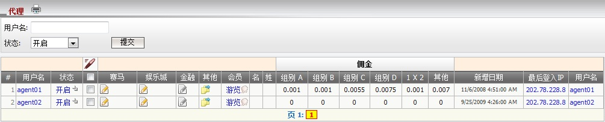
图 1.1
用词注解:
- 状态: 代理状态 (开启, 关闭, 暂停 或 禁用)。
- 组别 A,B,C,D: 基于组别的代理佣金数额设定, 而这些设定将根据投注类别亚洲盘, 单双, 大小盘应用于注单。 注意每个会员将属于一个明确的组别 (A, B, C, D)。
- 1x2 佣金: 基于会员注单根据投注类别1x2的代理佣金数额设定。
- 其他佣金: 基于会员注单根据其他投注类别的代理佣金数额设定。
如何修改会员资料?
- 我们可以修改单一代理或多重代理的以下资料: 状态, 佣金, 投注设定及占成数。
- 在体育博彩投注设定及占成, 我们可以设置个别运动类别的值或只是设置足球/篮球的值再应用到其他运动类别。
编辑体育博彩
修改单一会员资料
- 点击状态栏的 "开启" 键以修改代理信息, 之后将开启编辑页面, 请参考 新增代理 指引以便了解这页面的细节。
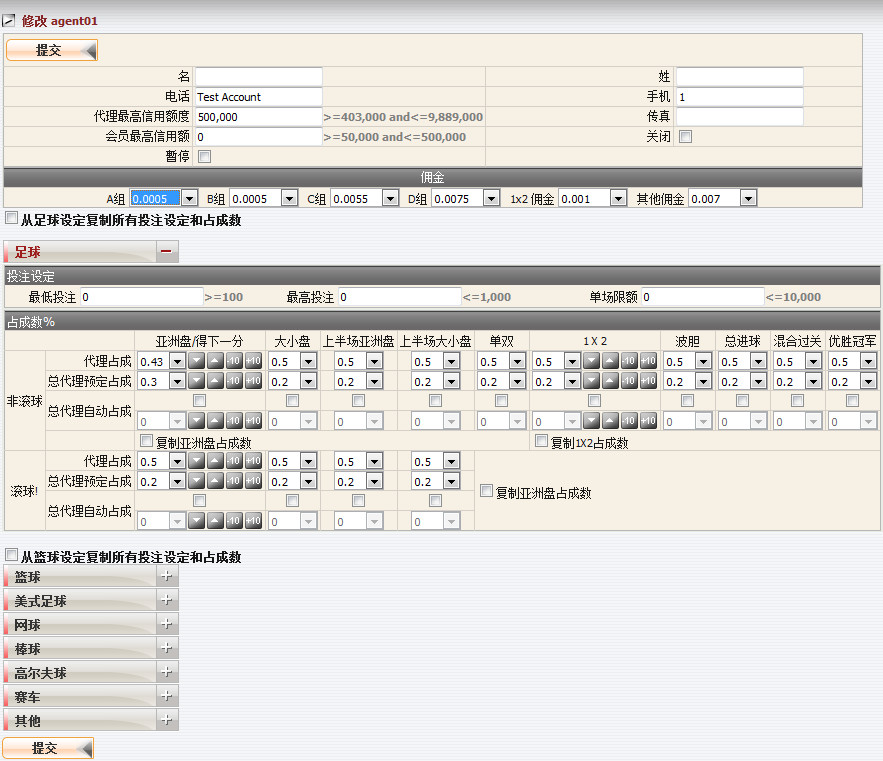
编辑单一代理
修改多重代理资料
- 从代理名单, 点选您要编辑的个别代理, 点击 "修改图标" 然后选择 "修改多重体育博彩占成", 请参考新增代理指引以了解这页面的细节。请记得所有代理都讲具有相同的设置。若要编辑所有代理, 使用 "选择所有" 功能。
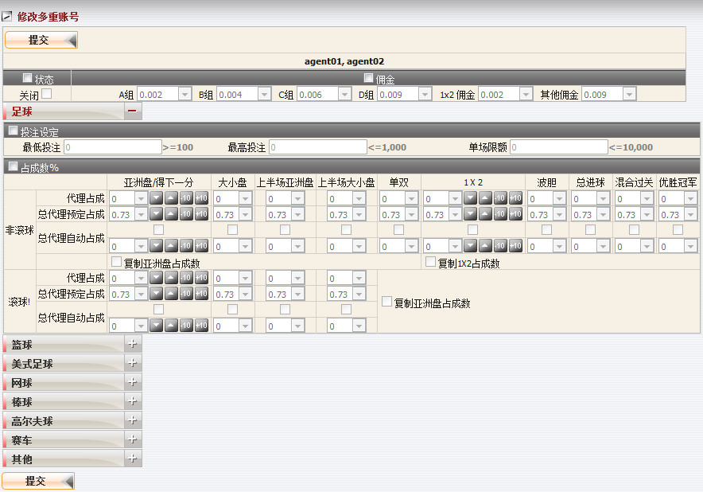
编辑多重代理
编辑赛马
修改单一代理赛马设定
- 在赛马栏目点击 "修改图标" 以修改代理资料, 然后代理修改页面将被开启。
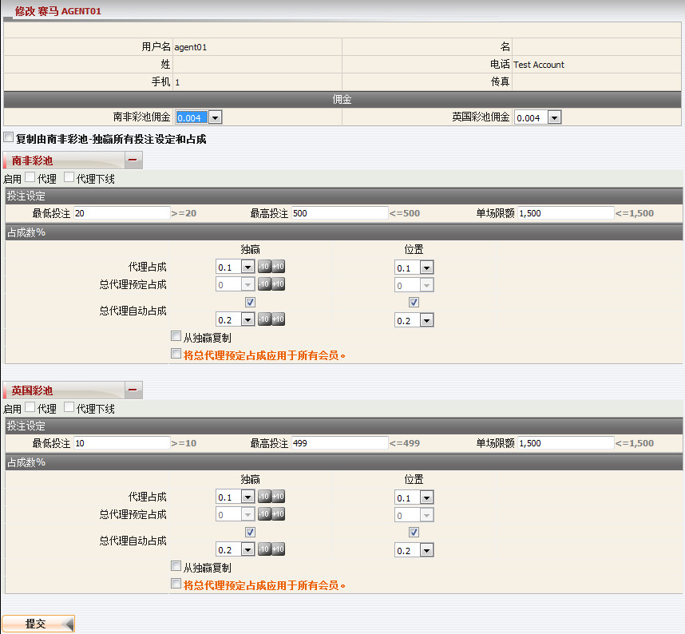
修改单一会员
修改多重代理赛马设定
- 从代理名单, 点选您要编辑的个别代理, 点击 "修改图标" 然后选择 "修改多重賽馬占成", 请参考新增代理指引以了解这页面的细节。请记得所有代理都讲具有相同的设置。若要编辑所有代理, 使用 "选择所有" 功能。
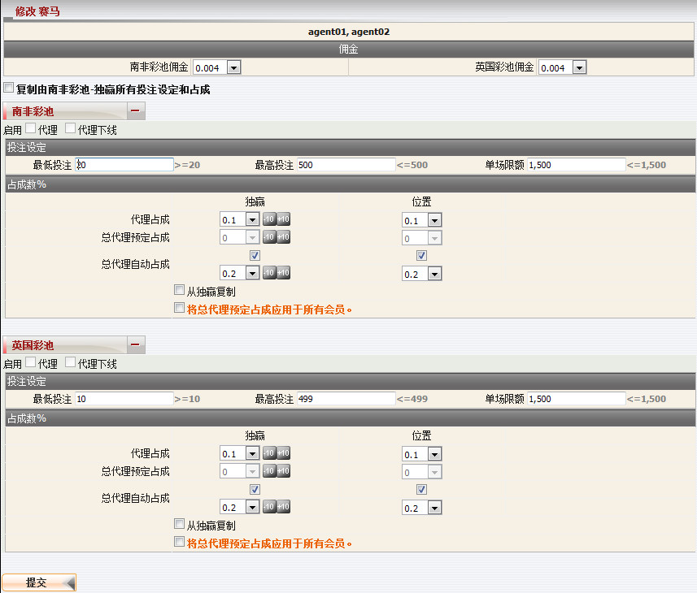
修改多重代理
编辑娱乐城
修改单一代理娱乐城设定
- 在娱乐城栏目点击 "修改图标" 以修改代理资料, 然后代理修改页面将被开启。
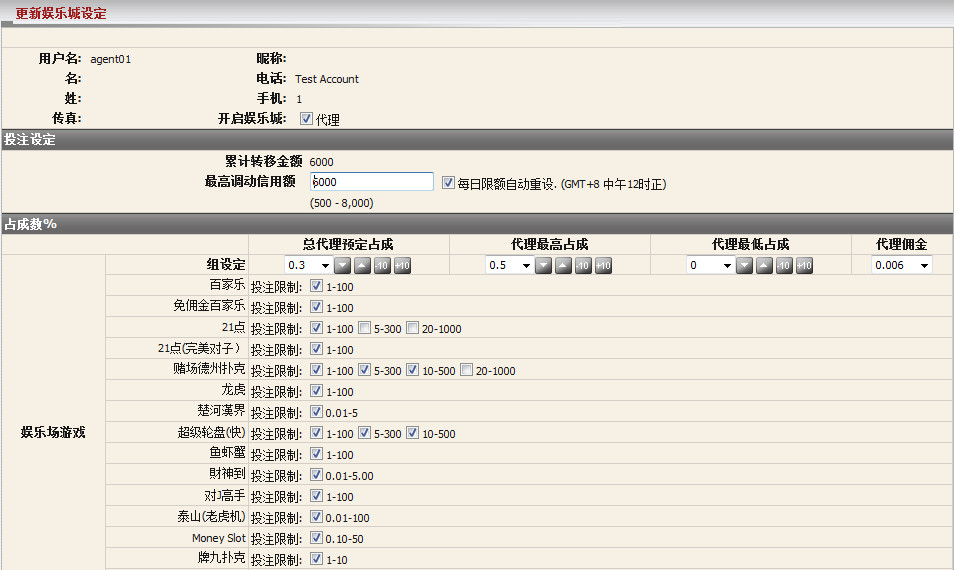
修改单一代理
修改多重代理娱乐城设定
- 从代理名单, 点选您要编辑的个别代理, 点击 "修改图标" 然后选择 "修改多重娱乐城占成", 请参考新增代理指引以了解这页面的细节。请记得所有代理都讲具有相同的设置。若要编辑所有代理, 使用 "选择所有" 功能。
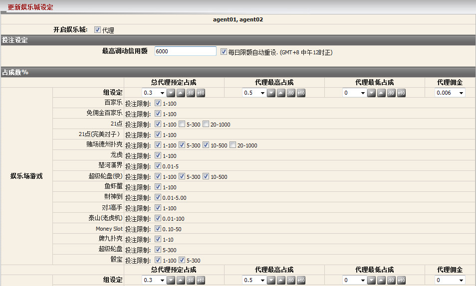
修改多重代理
修改金融
修改单一代理金融设定
- 在金融栏目点击 "修改图标" 以修改代理资料, 然后代理修改页面将被开启。
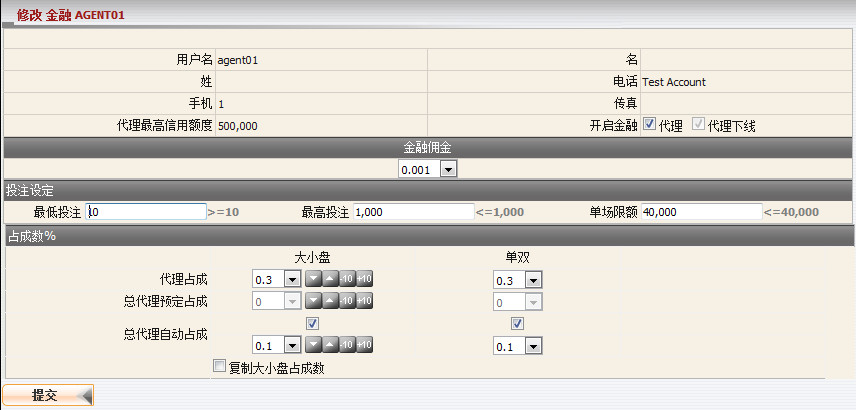
修改单一代理
修改多重代理金融设定
- 从代理名单, 点选您要编辑的个别代理, 点击 "修改图标" 然后选择 "修改多重金融占成", 请参考新增代理指引以了解这页面的细节。请记得所有代理都讲具有相同的设置。若要编辑所有代理, 使用 "选择所有" 功能。
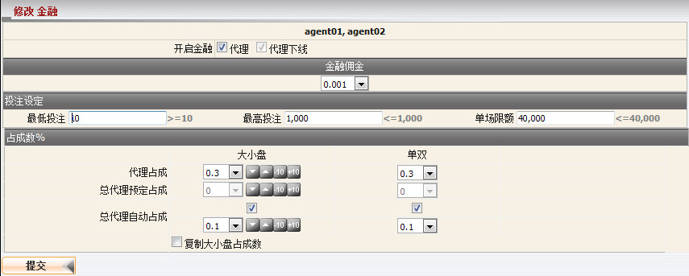
修改多重代理
如何编辑代理最低占成数?
最低占成数是代理必须取的最低值, 此值将立即影响当前代理占成数。
编辑体育博彩最低占成数
-
在其他栏目点击 "修改图标", 然后选择 "体育博彩最低占成数" 以修改代理最低占成。对于体育博彩最低占成, 我们可以对各项体育类别定值, 或使用足球/篮球的设定然后应用于其他体育类别。
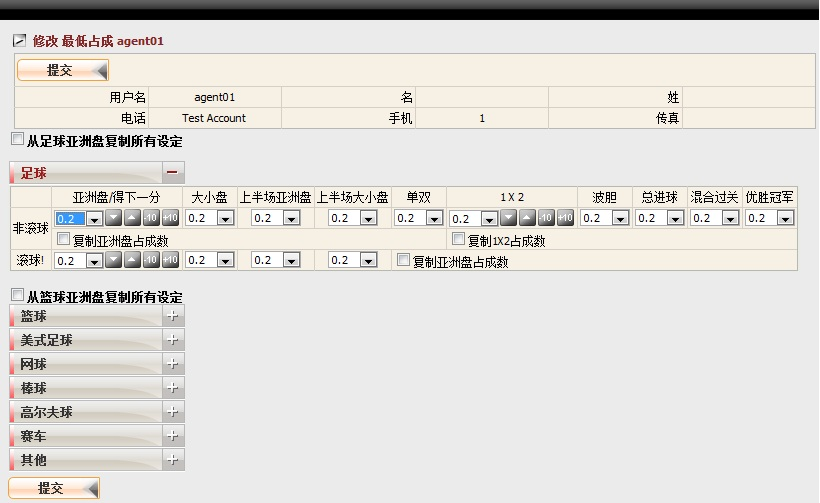
修改代理最低占成数
编辑金融最低占成数
-
在其他栏目点击 "修改图标", 然后选择 "金融最低占成数" 以修改代理最低占成。
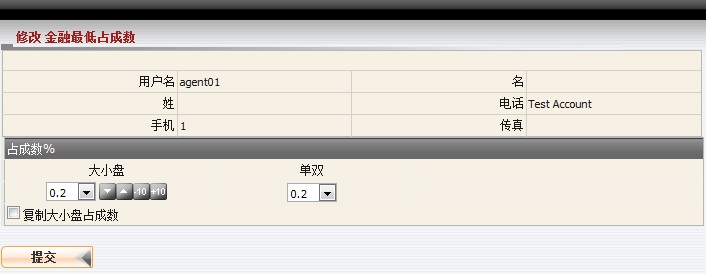
修改最低占成数
编辑赛马最低占成数
-
在其他栏目点击 "修改图标", 然后选择 "赛马最低占成数" 以修改代理最低占成。修改最低占成页面将被开启:
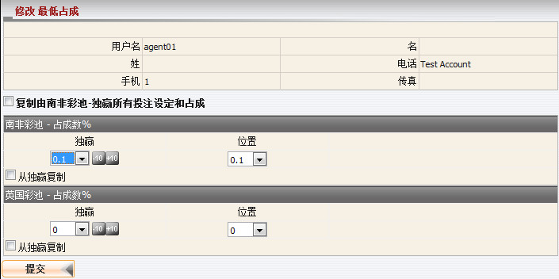
修改代理最低占成数
如何编辑转账设定?
在其他栏目点击 "修改图标", 然后选择 "转账" 以修改代理转账设定。修改转账设定页面将被开启:
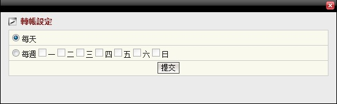
修改代理转账设定
注:
- 这只会出现在当总代理被允许每日转账。
- 若要修改代理转账设定, 总代理必须被允许能够每日转账。
如何更改代理密码?
在其他栏目点击代理的 "修改图标", 然后选择 "密码"。更改密码页面将被开启:
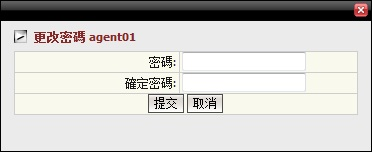
更改代理密码
如何查看会员每日账目?
点击代理用户名, 然后代理每日账目页面将被开启。
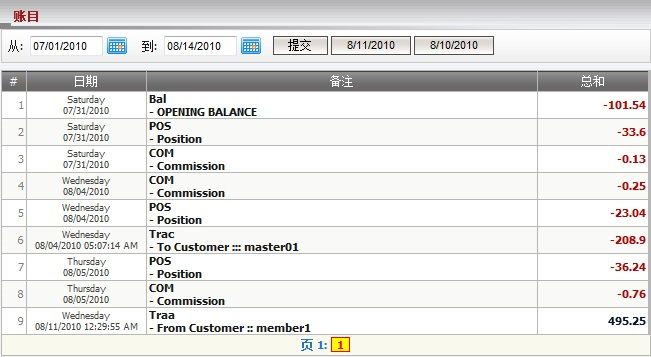
代理每日账目
- 用词注解:
- Bal-OPENING BALANCE: 所有输赢的总额及转账交易至期初余额日的前一天。
- POS-Position: 基于占成数代理的收入数额。
- COM-Commission: 扣除会员佣金后, 代理剩余的佣金。
- Trac-To Customer: 代理与上线的转账数额 (由上线执行)。
- Traa-From Customer: 代理与会员的转账数额 (由代理执行)。
如何查看会员名单?
在会员栏目点击代理的 "游览" 以查看代理的会员名单。会员名单页面将被开启:
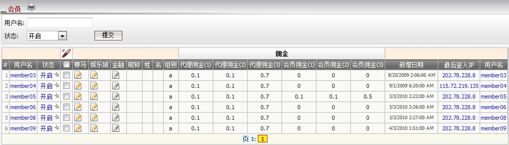
会员名单
用词注解:
- 状态: 会员状态 (开启, 关闭 或 暂停)。
- 组别: 会员属于的组别, 不同的组别不同的佣金率。
- 代理佣金(1): 代理佣金设定适用于投注类别: 亚洲盘,大小盘和单双的注单。
- 代理佣金(2): 代理佣金设定适用于投注类别: 1x2的注单。
- 代理佣金(3): 代理佣金设定使用于其他投注类别的注单。
- 会员佣金(1): 会员佣金设定适用于投注类别: 亚洲盘,大小盘和单双的注单。
- 会员佣金(2): 会员佣金设定适用于投注类别: 1x2的注单。
- 会员佣金(3): 会员佣金设定使用于其他投注类别的注单。
如何编辑会员资料?
- 总代理可以根据以下细节修改单一会员资料或多重会员资料: 状态及总代理对于会员的占成数。
- 我们可以设置个别运动类别的占成数或使用足球/篮球的设置再应用到其他运动类别。
编辑体育博彩
修改单一会员资料
- 在状态栏目点击 "状态" 以修改会员设定, 之后会员体育博彩修改页面将被开启:
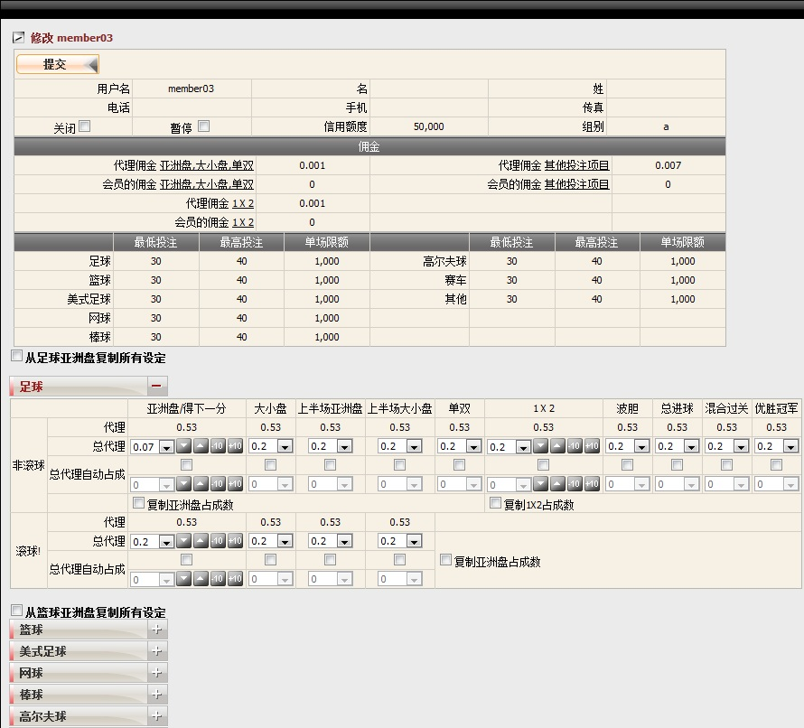
修改单一会员
修改多重会员资料
- 从会员名单, 点选您要编辑的个别会员, 点击 "修改" 图标然后选择 "修改多重体育博彩占成", 之后多重会员修改页面将被开启。 请记得所有会员都讲具有相同的设置。若要编辑所有会员, 使用 "选择所有" 功能。
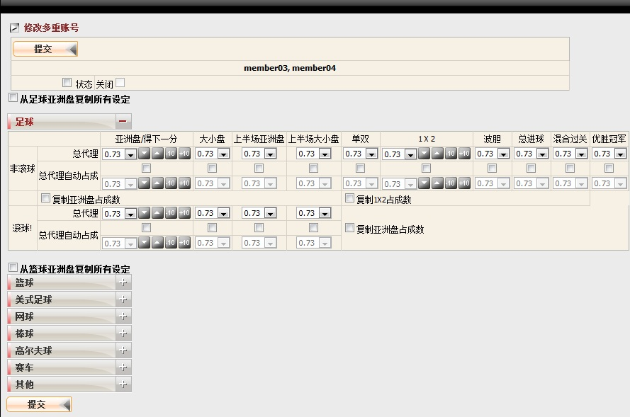
修改多重会员
编辑赛马
修改单一会员赛马设定
- 在赛马栏目点击 "修改图标" 以修改会员设定, 之后会员赛马修改页面将被开启:
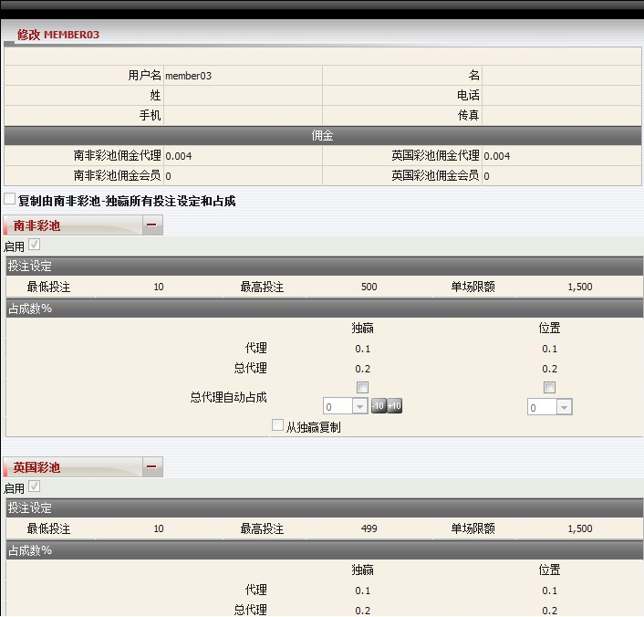
修改单一会员
修改多重会员赛马设定
- 选择所有, 点击 "修改图标", 然后选择 "修改多重赛马占成数" 以进行更新。请记得所有会员都讲具有相同的设置。
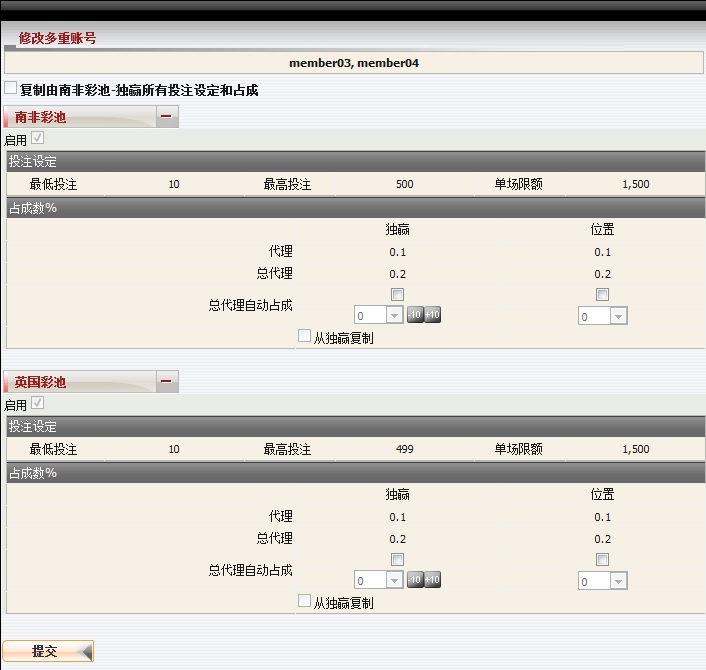
修改多重会员
编辑娱乐城
修改单一会员娱乐城设定
- 在娱乐城栏目点击 "修改图标" 以修改会员设定, 之后会员娱乐城修改页面将被开启。
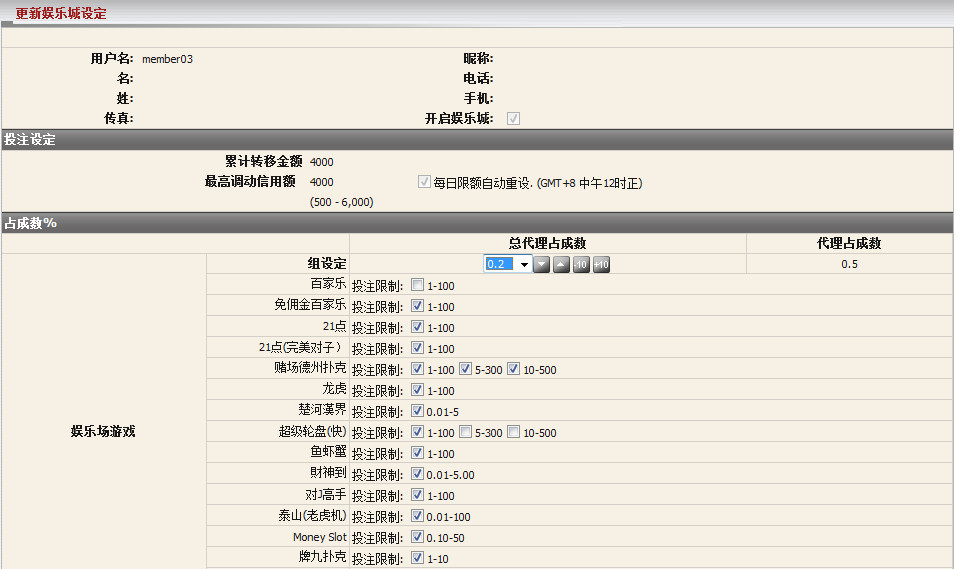
修改单一会员
修改多重会员娱乐城设定
- 选择所有, 点击 "修改图标", 然后选择 "修改多重娱乐城占成数" 以进行更新。请记得所有会员都讲具有相同的设置。
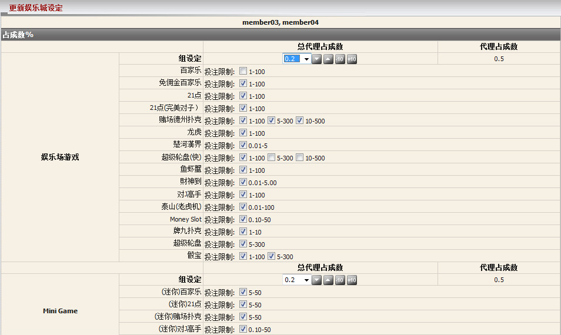
编辑多重会员
编辑金融
修改单一会员金融设定
- 在金融栏目点击 "修改图标" 以修改会员设定, 之后会员金融修改页面将被开启。
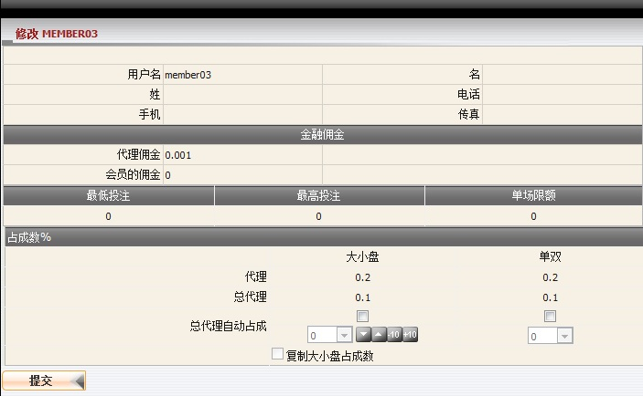
修改单一会员
修改多重会员金融设定
- 选择所有, 点击 "修改图标", 然后选择 "修改多重金融占成数" 以进行更新。请记得所有会员都讲具有相同的设置。
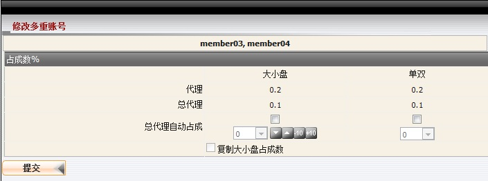
修改多重会员
如何查看会员每日账目?
点击会员用户名, 之后会员每日账目页面将被开启。
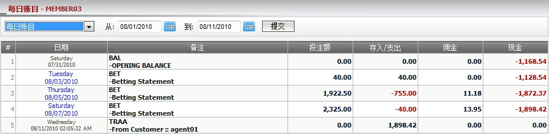
会员每日账目
- 用词注解:
- BAL-OPENING BALANCE: 所有输赢的总额及转账交易至期初余额日的前一天。
- BET-Betting Statement: 输赢数额于已结算注单。
- BET-Outstanding Bet: 进行中/等待中的注单的总投注额。
- TRAA-To Customer, TRAA-From Customer: 代理与会员的转账 (由代理执行)。